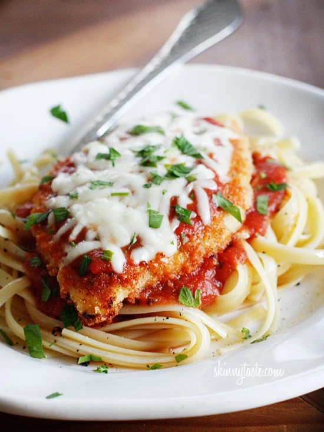

Chicken Parmesan

INGREDIENTS
- 4 chicken breasts, about 8 oz each, sliced in half lengthwise to make 8
- 3/4 cup seasoned breadcrumbs
- 1/4 cup grated Parmesan cheese
- 2 tbsp butter, melted (or olive oil)z
- 3/4 cup reduced fat mozzarella cheese
- 1 cup marinara
- Cooking spray
DIRECTIONS
- Preheat oven to 450F. Spray a large baking sheet lightly with spray.
- Combine breadcrumbs and parmesan cheese in a bowl. Melt the butter in another bowl. Lightly brush the butter onto the chicken, then dip into breadcrumb mixture. Place on baking sheet and repeat with the remaining chicken.
- Lightly spray a little more oil on top and bake in the oven for 25 minutes.
- Remove from oven, spoon 1 tbsp sauce over each piece of chicken and top each with 1 1/2 tbsp of shredded mozzarella cheese.
- Bake 5 more minutes or until cheese is melted.